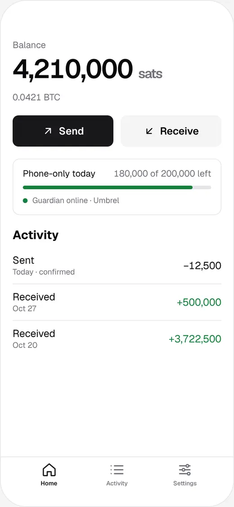
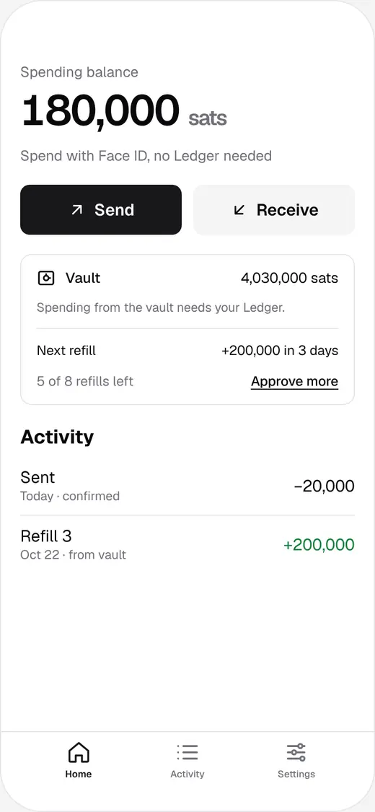

A 2-of-3 bitcoin wallet where every key is yours.
Trikey works like Bitkey, but no company holds a key. The third key is a program on your own home server, not someone else's.
Pre-alpha, not audited, don't use with real funds. Trikey is under development and has had no security review. Test networks only for now.

Three keys
Any two keys move money.
Your bitcoin sits behind a 2-of-3 multisig. You hold all three keys, each on a different device.
-
Key 1
Any hardware wallet
Ledger, Trezor, Coldcard, BitBox, Jade and other multisig-capable devices.
Big payments, changing your rules, recovery.
-
Key 2
Your phone
Kept behind your phone's biometrics, with an encrypted backup in your own cloud that a passkey unlocks.
Everyday payments.
-
Key 3
Trikey Guardian
An app on your own Umbrel or Start9. It only co-signs what your rules allow, and it never opens a port on your home network.
Co-signs phone payments under a daily limit. Runs a 7-day Delay & Notify recovery.
The wallet is a plain wsh(sortedmulti(2, …)) descriptor, so any multisig-capable wallet can recover your funds without Trikey. The phone and the guardian talk over encrypted nostr relays, which see only ciphertext.
When something goes wrong
Losing one device never costs you the wallet.
-
If your phone is stolen
The thief can spend at most your daily limit, because the guardian has to co-sign. They can't raise the limit, because that needs your hardware wallet. If they start a recovery, the guardian alerts you and your contacts every day, and any of you can cancel it before anything moves.
-
If you lose your phone
With the cloud backup, restore the phone key on a new phone with your passkey. No waiting. Without it, your hardware wallet and the guardian start a recovery that waits 7, 14 or 30 days, then sweeps the funds to a new wallet.
-
If your home server is stolen
An unplugged guardian is locked, so the thief holds one usable key of three. If they keep it powered, they can still only reach the daily limit, and any recovery sets off the alerts. You can replace the guardian with your phone and hardware wallet, and sweep to a new wallet. Keep your hardware wallet's seed words outside the home.

Recovery Key mode
No home server?
Key 3 can stay offline: a printed kit, an NFC card or a second hardware wallet. The script is the same, so there is no guardian to run.
- The phone spends from a small balance of its own.
- Your vault refills that balance through pre-signed refills, each with a timelock of about a week. Only one refill can confirm per week, whatever a thief does.
- Recovery is immediate with any two keys, with no waiting period.
- The costs: keep the Recovery Kit apart from your seed words, approve a new batch of refills every couple of months, and expect a big vault payment to need a fresh batch.

Open source
Free software, built in the open.
Trikey is MIT licensed. The wallet, the guardian and the design are all on GitHub, including the threat model and the questions still open. Read them before you trust any of it.
Pre-alpha, not audited, don't use with real funds. There is no release yet, so there is nothing to download. A remote compromise of your home server gives up one key of three, and phone payments wait while the guardian is offline.